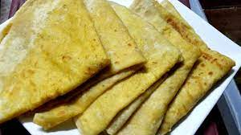

Dhalpuri Roti

Description
Trinidad Dhalpuri Roti It's a thin flatbread cooked on a hotplate
with a layer of ground split-peas inside.
Wrap roti, often referred to as a roti, is a popular food in the
Caribbean, and consists of curried or stewed meat and or vegetables folded
tightly within a dhalpuri or paratha roti. The items placed inside of a
wrapped roti are commonly called tarkari in Trinidad and Tobago.
Yield: 6 Rotis
Ingredients
For Filling:
- 2 cups Split Peas
- 10 cups Water
- 2 tsp. Turmeric Powder (Saffron)
- 1 1/2 tbsp. Salt
- 12 leaves/ 1/4 cup Chadon Beni/Culantro
- 1 tbsp. or to taste (seeds & core removed) Scotch Bonnet Pepper
- 3 tbsp. (minced) Gralic
- 3 tbsp. Coconut Oil/Ghee
- 1 tbsp. Cumin Powder/Roasted Geera
For Dough:
- 4 cups of All Purpose Flour
- 1 tbsp. Baking Powder
- 1 1/2 tsp. Brown Sugar
- 2 tsp. Salt
- 1 1/2 cups Warm Water
- 1 tsp. + 1/2 cup Melted Ghee
Steps
-
For the filling, add water to a pot and bring to a boil over medium
heat.
- Add split peas, turmeric and salt.
-
Partly cover the pot and allow to cook until tender, approximately 30
minutes.
- Drain and allow peas to cool and dry completely.
- Once cool and dry, add 1/2 to food processor.
-
Add chadon beni, pepper and garlic and process into a fine powder. Be
sure not to allow it to turn into a paste.
-
Remove from processor and add remaining split peas, processing into a
fine powder.
- Remove from processor and add to remaining filling.
- Add geera powder to filling and taste for salt. Add If needed.
- Set aside.
- Heat a pot over high heat.
- Add coconut oil/ghee.
-
Once oil is hot, add filling and cook for 5 minutes, stirring constantly
to ensure all excess moisture is removed.
- Remove from heat and allow to cool.
-
For the dough, add flour, baking powder, brown sugar and salt to a bowl.
- Mix together and make a hole in the middle.
- Add water and knead for 3 to 5 minutes.
-
Once dough is formed, place in a bowl, rub 1 tsp of ghee all over it,
cover and allow to rest for 30 minutes.
- Divide dough into 6 equal pieces (weigh them if necessary).
-
Using your hand, press each one out into a 4” disc, ensuring not to
press out the middle of the dough.
- Fill each one with 1/4 cup or more of filling. Do not overfill!
-
Seal each one by bringing the ends and pinching them together as
illustrated in the video. I suggest you watch this part several times
before attempting.
-
Once sealed, dust with flour, place on a floured surface, cover and
allow to rest for 30 minutes.
-
On a lightly floured surface, using your rolling pin, roll each roti out
to 1/8 inch thick, ensuring to turn your roti 90 degrees
counter-clockwise after each roll.
-
If this is your first attempt, you may want to roll it out to 1/4 inch
thick as it may burst, causing the filling to spill out.
- Heat your tawa over medium heat.
- Once heated, brush with ghee.
-
Remove excess flour from your roti by gently tossing it from hand to
hand several times.
- Immediately place on tawa and spread your roti into a circle.
- Brush with ghee and flip after 30 seconds.
-
Once flipped, apply ghee to any dry spots and allow to cook for 30
seconds.
- Flip several times, ensuring the ends are cooked.
-
Once cooked, fold roti as illustrated in the video, remove from tawa and
place into an insulated container and allow to sit for 5 to 10 minutes.